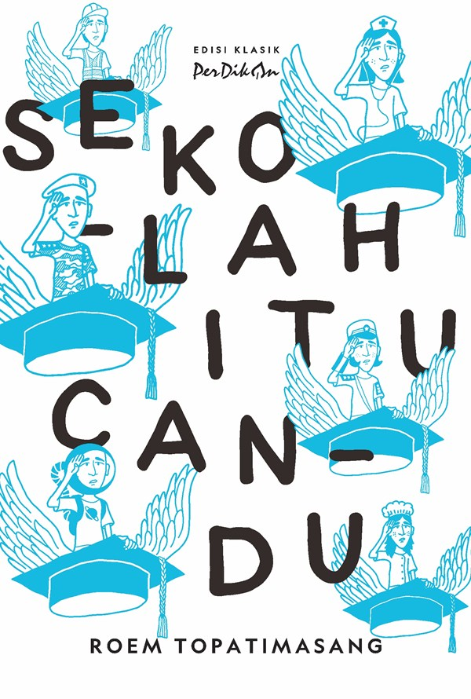
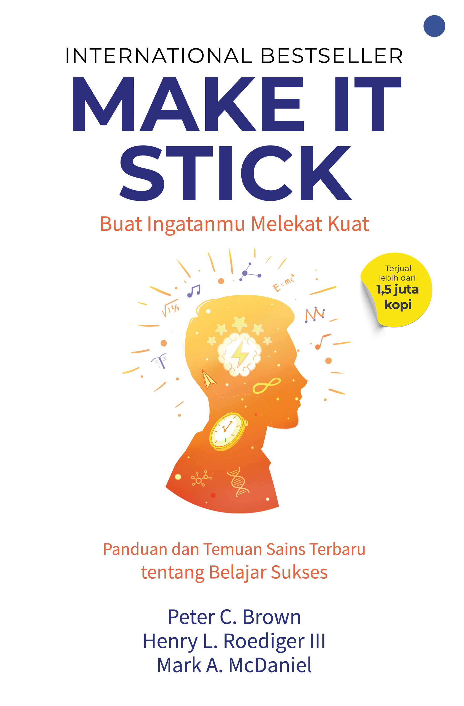
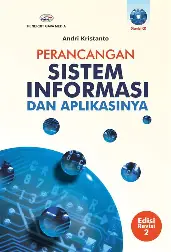
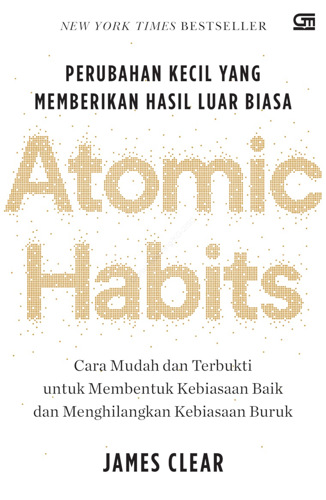

Semua Buku
6 buku tersedia

Pendidikan
Sekolah Itu Candu
Roem Topatimasang
Buku Sekolah Itu Candu karya Roem Topatimasang adalah bacaan berani yang mengkritik keras fungsi sistem sekolah formal yang seringkali hanya mencetak manusia menjadi pekerja patuh, tanpa benar-benar mencerdaskan mereka di kehidupan sosial nyata.
Baca Review
Pendidikan
Make It Stick: The Science of Successful
Peter C.Brown etc
Buku Make It Stick: The Science of Successful Learning by Peter C. Brown, Henry L. Roediger III, Mark A. McDaniel (English) mematahkan mitos belajar Sistem Kebut Semalam. Buku ini mengungkap strategi psikologi kognitif untuk menciptakan pembelajaran dan daya ingat yang jauh lebih melekat kuat di otak.
Baca Review
Teknologi
Technology Matters:Questions to Live With
David E.Nye
Buku Technology Matters: Questions to Live With karya David E. Nye mengeksplorasi secara historis dan filosofis sepuluh pertanyaan besar tentang hubungan manusia dengan mesin—termasuk apakah teknologi membebaskan kita atau justru mengurung kita dalam keseragaman.
Baca Review
Teknologi
Perancangan Sistem Operasi Dan Aplikasinya
Andri Kristanto
Buku ini membedah teori di balik pembuatan sistem, seperti klasifikasi sistem, diagram aliran data, hingga contoh nyata penerapannya pada aplikasi e-commerce masa kini.
Baca ReviewPengembangan Diri
Ikigai
Héctor García Francesc Mirales
Buku ini mengeksplorasi filosofi orang-orang di Pulau Okinawa, Jepang. Penulis menyampaikan bahwa kunci umur panjang dan kebahagiaan terletak pada "Ikigai", yaitu menemukan hal yang Anda cintai dan terus aktif mengerjakannya.
Baca Review
Pengembangan Diri
Atomic Habits
James Clear
James Clear memaparkan metode ilmiah yang sangat praktis tentang bagaimana rutinitas sekecil 1% setiap hari bisa menumpuk menjadi perubahan identitas dan hidup yang luar biasa di masa depan.
Baca Review